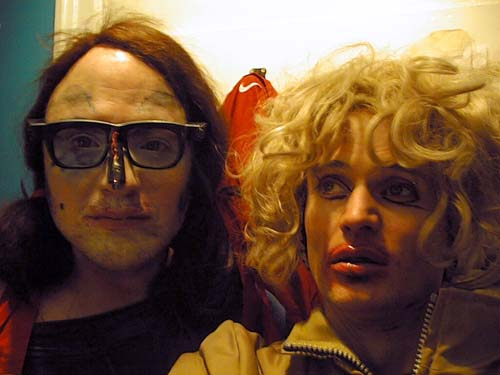

Happening /Reklame på Café Oscar for Dunst festen Arty Farty, Copenhagen. |

Ramona Macho & Dennis Agerblad.

Ramona Macho & Dennis Agerblad.

Ramona Macho & Dennis Agerblad.

Dennis Agerblad & Ramona Macho.

Dennis Agerblad & Ramona Macho.

Sune Prahl Knudsen & Dennis Agerblad.

Sune Prahl Knudsen & Dennis Agerblad. Ramona Macho in the back.

Dennis Agerblad, Ramona Macho & Johnny Warehouse.

Puta, Johnny Warehouse & Dennis Agerblad.

Dennis Agerblad & Johnny Warehouse.

Ramona Macho & Dennis Agerblad.